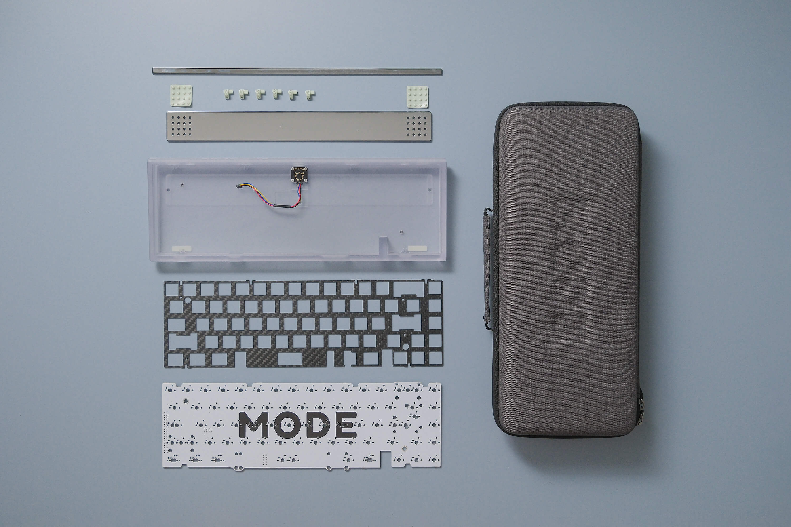
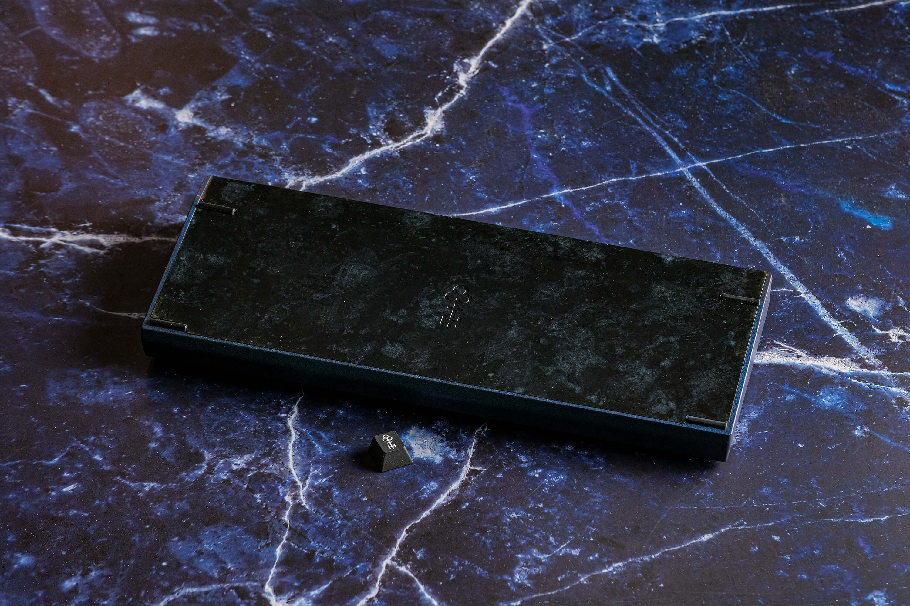
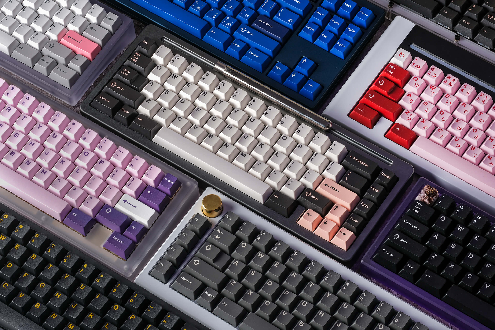

Custom Keyboards
Build them your own way
Why custom keyboards?
You may be wondering what’s special about a custom mechanical keyboard. Well, when it comes to the utility of the keyboard, they are exactly the same as a standard membrane keyboard and/or mechanical keyboards sold by big companies such as Razer, Logitech, Corsair, etc. Then, what’s really is so special about custom mechanical keyboards? The answer is essentially in the name, the main benefit of them is that you get to customize the switches, keycaps, modifications, and even things like weight and accents that you put in them. When you think about modern daily life, we spend a lot of time using our computers, a lot of people even use them while working or studying, from home, an office, or school. so, I ask you this question, why not put some effort, time and money into a tool that we daily use? Now that you have an idea of why you’d spend some time on your keyboard, let’s talk about what exactly custom mechanical keyboards offer:
1. Customization:
Custom mechanical keyboards allow users to choose their own switch type, keycaps, and other components, which allows for a personalized typing experience.

2. Build Quality:
Custom mechanical keyboards are often built with higher-quality components, such as aluminum or stainless-steel cases, which make them more durable and longer-lasting than standard keyboards.

3. Unique Designs:
Custom mechanical keyboards can be designed to have unique layouts, colors, and styles, which can make them stand out and add a personal touch to a user's desk.

4. Improved Typing Experience:
Custom mechanical keyboards can offer a more tactile and satisfying typing experience, due to the use of mechanical switches and custom keycaps.
5. Enhanced Functionality:
Custom mechanical keyboards can have additional features such as programmable macros, dedicated media controls, and custom lighting, which can improve the overall user experience.